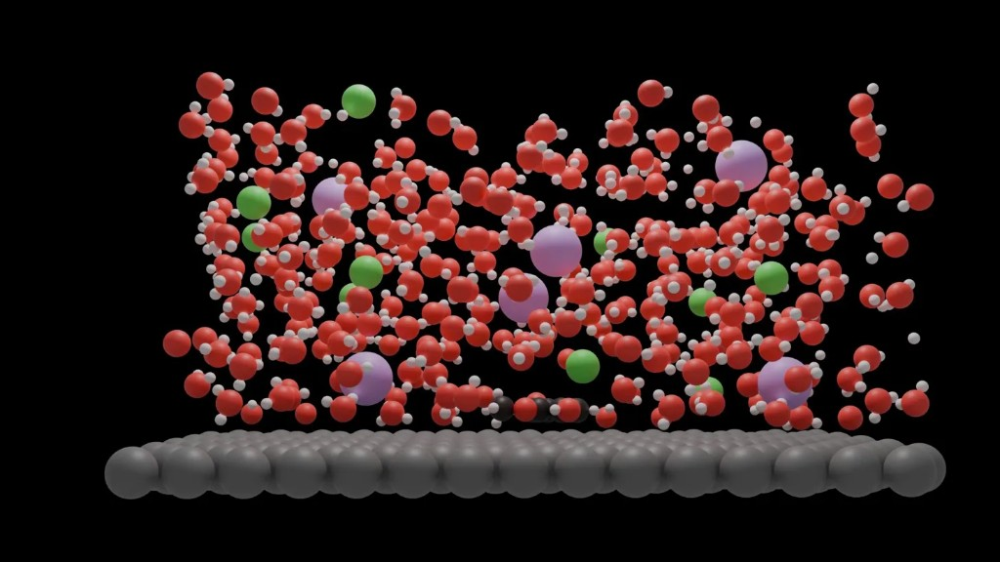

Electrocatalytic Hydrogenation
Effect of electrode potential, electrolyte species, and co-reactants on electrocatalytic hydrogenation of organics using DFT and AIMD.
VASPJDFTxASE
Computational Catalysis · ML Potentials · Agentic AI
PhD Candidate · Chemical Engineering
University of Michigan, Ann Arbor
Research at the intersection of simulation, kinetics, and machine learning.
PhD Candidate in Chemical Engineering and Scientific Computing at the University of Michigan. Research sits at the intersection of atomistic simulation, reaction kinetics, and machine learning for catalysis and materials science.
Work spans DFT, AIMD, ML interatomic potentials (MACE), and agentic AI workflows for autonomous transition-state discovery.
Previously interned at Lawrence Livermore National Laboratory and researched biomass liquefaction at the University of Alberta.
Atomistic modeling, electrocatalysis, and AI-driven discovery.
Effect of electrode potential, electrolyte species, and co-reactants on electrocatalytic hydrogenation of organics using DFT and AIMD.
Multi-agent LLM workflows for autonomous transition-state discovery, combining planning with DFT-based mechanistic modeling.
Estimating potential-dependent physicochemical properties at metal–electrolyte interfaces using MACE architecture at Lawrence Livermore National Lab.
Role of aqueous ions on adsorption of aromatic organics on Ag surfaces and synergistic effects in organic mixtures.
Conversion of lignocellulosic biomass and agricultural residues into bio-oil at the University of Alberta.
Scalable HPC pipelines for DFT and MD workflows, Slurm/PBS orchestration, and GPU-accelerated computing.

Molecular Dynamics Simulation — Metal–electrolyte interface showing water molecules, co-ions, and adsorbed organics at a platinum surface.
Peer-reviewed articles and preprints (newest first).
Tools and methods across modeling, ML, and computing.
Recognition for research, travel, and innovation.
Top 25 teams globally; agentic AI for materials science.
For exceptional advancements in catalysis.
University of Michigan (2022, 2023, 2024).
University of Alberta; top 5% incoming cohort.
University of Alberta; extraordinary research.
Indian Academy of Sciences; top 10% applicants.